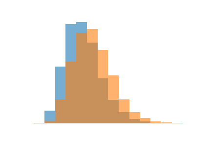
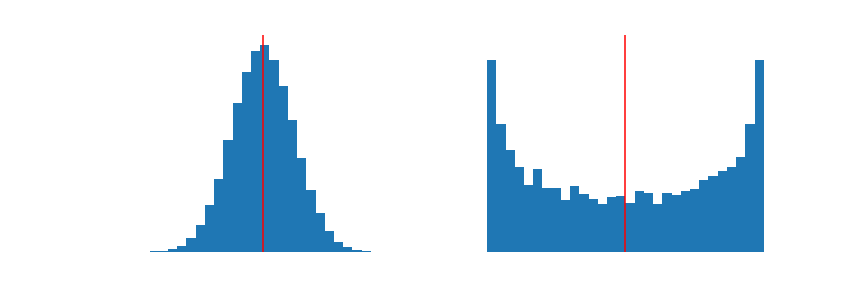

Permutation Tests¶
A tale of two samples¶
Commonly data science is used to measure differences between two groups. This is the case in scenarios such as a treatment and control group in which the effect of a medication is measured, and also in scenarios such as ‘A/B testing’ in which two different versions of a product are shown to users and the company determines which version drives more business.

When measurements from two groups are compared, we may find that the samples have a similar shape, but some of their statistics differ. How do we rule out that it wasn’t just random chance that lead to the difference?
Sounds like it’s time for another simulation, but to do so we need to ask the right question first:
Could the two groups have been sampled from the same population?
Turns out, simply by comparing the statistics from these samples it’s possible for us to build enough evidence to claim that they don’t have the same underlying population distribution!
If two samples have drastically different statistics, then it’s unlikely that the two samples could have come from the same population distribution.
Just how ‘unlikely’ we’re willing to still believe will define our level of significance. Then we’ll use the null hypothesis to propose that such a difference could have occurred solely due to random chance in the sampling, and the alternative hypothesis to suggest that the two samples actually came from populations with differing parameters!
Choosing a statistic and declaring our hypotheses¶
Recall the general requirements for conducting a hypothesis test. We need to be able to:
Observe a statistic from the collected data
Generate new values of the test statistic under the assumptions of the null hypothesis
A statistic is one number, but we have two samples. Somehow, our choice of test statistic must capture both samples in a single number and at the same time should represent the magnitude of difference between the samples.
The easiest way to accomplish these demands is to measure the difference in sample statistics between the two samples.
Thus our test statistic, and our initial observed statistic will be calculated as: $\(\text{test statistic} = \text{Group A statistic} - \text{Group B statistic}\)$
Consequently, if the Group A statistic is smaller than the Group B statistic, then we’ll observe a negative value of our test statistic.
When we extrapolate our samples to form hypotheses about the populations behind each group, we arrive at the null hypothesis that the two group populations have the same parameter (since they are the same distribution), and the alternative hypothesis that the two group populations exhibit different parameters.
\(H_0: \text{Group A parameter} = \text{Group B parameter}\)
\(H_1: \text{Group A parameter} \neq \text{Group B parameter}\) (or \(<\), \(>\))
We can re-write our hypotheses to match our test statistic a bit closer.
\(H_0: \text{Group A parameter} - \text{Group B parameter} = 0\)
\(H_1: \text{Group A parameter} - \text{Group B parameter} \neq 0\) (or \(<\), \(>\))
In this two-sample setting, our alternative hypothesis may be \(\star < 0\) if we have a suspicion that the Group A parameter is less than than the Group B parameter.
Permuting to generate new test statistics¶
Now we must generate new values of our test statistic under the null… how do we do that?
In the previous one-sample hypothesis test, we had a model for the exact shape of the assumed population since we wanted to check if our sample came from a specific population. This allowed us to directly generate new data from that distribution.
In this two-sample case, we’re only curious if the two samples have the same underlying population. Our assumptions about the underlying population have eroded such that we no longer assume – or care, really – what the distribution looks like. Without a distribution to utilize, we cannot general novel measurements. We can still generate new test statistics, however, by thinking cleverly about that data we do have.
We could have sampled this value into either group¶
Under the null hypothesis, our group measurements all come from the same population. Therefore, during sampling we could have just as easily sampled a Group A point into the Group B sample instead! If they truly come from the same population, then it doesn’t matter which group each measurement belongs to.
In practice, this means that underneath the null we can ‘generate’ a new set of samples by just swapping some data points between our Group A sample and our Group B sample. Some of Group A samples get moved into Group B, and the same number from Group B get moved into Group A. This process is called permuting.
Once we’ve shuffled the group labels around, we can basically treat this new permuted data as an entirely new set of samples, this time samples where we’re assuming the group really doesn’t matter since both samples come from the same underlying distribution. With these ‘new’ permuted samples, we can calculate a new test statistic (remember: the difference between sample statistics).
Conduct the test, interpret the results¶
From this point, having satisfied the general requirements of a hypothesis test, we can follow the exact same simulation/hypothesis testing procedures as before.
Permute the data multiple times, each time computing a new simulated test statistic
Then compute the proportion of times the simulated test statistic is more extreme than the observed, where ‘extremity’ is based on your alternate hypothesis
Finally, compare this p-value to your pre-determined level of significance
When the p-value is sufficiently small, it’s because it is very unlikely that two samples drawn from the same distribution could have produced statistics that are so different from each other. At a certain point, this unlikeliness is great enough that we’ll reject the claim that the samples come from the same population. Instead, we believe that the populations each sample came from exhibit different parameters. This is when you can claim that there is ‘a significant difference’ in the parameters of the two groups.
On the other hand, when the p-value isn’t too unlikely, then we don’t have enough evidence to suggest that the Group A population has a different parameter value than the Group B population. For the moment, we fail to reject the hypothesis that the two groups came from the same population. That being said…
We never ‘accept’ the null, only fail to reject¶
We could very easily conduct a permutation test around one parameter, such as the mean, and find that we don’t have enough evidence to reject the null. After that, it’s still possible that we conduct another permutation test about a separate parameter, such as the variance, and decide that we should reject the null! How come?
Think about it this way: The same parameter value, like the mean, could be exhibited by two population distributions that look completely different, they just need to be centered around the same spot.

On the other hand, if we find any indication that two distributions have two different values for a parameter – such as if we found that a sample from each of the above populations suggest that the population variances differ – then we know that the two population distributions cannot be the same.
This is a great example as to why in data science and statistics we never ‘accept’ the null hypothesis – only reject or fail to reject. Often we may fail to reject a null hypothesis simply because we don’t have enough evidence, or we’re not quite looking in the right places.
And it’s a great example as to why we should always visualize our data! If the two samples look like they don’t even have the same general shape then we should think critically about what statistic to use.